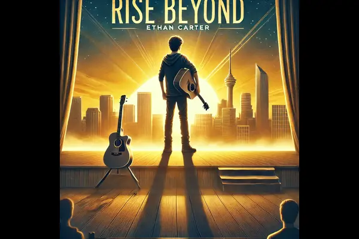

١٠. صمّم صفحة لمراجعة الأفلام Movie Review Page
مختبرالهدف: تنفيذ قصص المستخدم الموضحة أدناه.
نموذج HTML
<!DOCTYPE html>
<html lang="ar" dir="rtl">
<head>
<meta charset="UTF-8">
<meta name="viewport" content="width=device-width, initial-scale=1.0">
<title>مراجعة الأفلام Movie Review</title>
</head>
<body>
</body>
</html>
قصص المستخدم User Stories :
١. يجب أن يكون لديك عنصر "رئيسي"
main.٢. داخل العنصر "الرئيسي"
main، يجب أن يكون لديك عنصرh1لعنوان الفيلم.٣. أسفل عنصر
h1، يجب أن تضع عنصرimgيعرض "غلاف الفيلم" (the movie cover) . ينبغي أن يتضمن عنصرimg"نصاً بديلاً"alttext يصف الصورة. يمكنك استخدام الصورة التالية إذا أردت:https://cdn.freecodecamp.org/curriculum/labs/rise-beyond-2.png٤. يجب أن يكون لديك عنصر
pيحتوي على وصف موجز للفيلم.-
٥. يجب أن يكون لديك عنصر
pآخر لعرض "تقييم الفيلم" (the movie rating) . وعليك تضمين العناصر التالية بداخله وبالترتيب المذكور:عنصر
bيحتوي على النصتقييم الفيلم:.عنصر
spanبخاصيةaria-hiddenمضبوطة على القيمة"true"، ويحتوي على تمثيل مرئي للتقييم باستخدام النجوم⭐⭐⭐⭐⭐⭐⭐⭐⭐☆.قيمة رقمية تمثل التقييم، موضوعة بين قوسين (مثل 10/9.2) بعد "النطاق" (the span) .
٦. يجب أن يكون لديك عنصر
h2يحتوي على النصطاقم التمثيل٧. يجب أن يكون لديك عنصر
ul.٨. داخل عنصر
ul، يجب أن تتوفر لديك عناصرliمتعددة، يحتوي كل منها على عنصرbلإسم الممثل متبوعاً باسم الشخصية المقابلة، ومسبوقاً بكلمةفي دور(على سبيل المثال:جيمس هولواي في دور إيثان كارتر).
الحل The Solution
<!DOCTYPE html>
<html lang="ar" dir="rtl">
<head>
<meta charset="UTF-8">
<meta name="viewport" content="width=device-width, initial-scale=1.0">
<title>مراجعة الأفلام Movie Review</title>
</head>
<body>
<main>
<h1>مراجعة فيلم: الارتقاء نحو الآفاق</h1>
<img src="https://cdn.freecodecamp.org/curriculum/labs/rise-beyond-2.png"
alt="عازف غيتار شاب يقف على خشبة المسرح عند شروق الشمس، مُطلّاً على أفق المدينة، وتعلوه عبارة 'الارتقاء نحو الآفاق'." />
<p>تتناول قصة "الارتقاء نحو الآفاق" رحلة إيثان كارتر، وهو موسيقي شاب يواجه الشكوك والتحديات أثناء سعيه لتحقيق حلمه بأن يصبح عازف غيتار ناجحاً. ومن خلال العزيمة والشجاعة وقوة الموسيقى، يتعلم إيثان كيف يتغلب على مخاوفه ويشق طريقه الخاص نحو مستقبل أكثر إشراقاً.</p>
<p>
<b>تقييم الفيلم:</b>
<span aria-hidden="true">⭐⭐⭐⭐⭐⭐⭐⭐⭐☆</span>
(10/9.2)
</p>
<h2>طاقم التمثيل</h2>
<ul>
<li>
<b>جيمس هولواي</b>
في دور إيثان كارتر
</li>
<li>
<b>أوليفيا ستيرلينغ</b>
في دور لينا ميتشل
</li>
<li>
<b>ويليام لانكستر</b>
في دور البروفيسور آدامز
</li>
<li>
<b>ماريا كولينز</b>
في دور إيفلين كارتر (والدة إيثان)
</li>
</ul>
</main>
</body>
</html>
التطبيق The Application
مراجعة فيلم: الارتقاء نحو الآفاق

تتناول قصة "الارتقاء نحو الآفاق" رحلة إيثان كارتر، وهو موسيقي شاب يواجه الشكوك والتحديات أثناء سعيه لتحقيق حلمه بأن يصبح عازف غيتار ناجحاً. ومن خلال العزيمة والشجاعة وقوة الموسيقى، يتعلم إيثان كيف يتغلب على مخاوفه ويشق طريقه الخاص نحو مستقبل أكثر إشراقاً.
تقييم الفيلم: (10/9.2)
طاقم التمثيل
- جيمس هولواي في دور إيثان كارتر
- أوليفيا ستيرلينغ في دور لينا ميتشل
- ويليام لانكستر في دور البروفيسور آدامز
- ماريا كولينز في دور إيفلين كارتر (والدة إيثان)